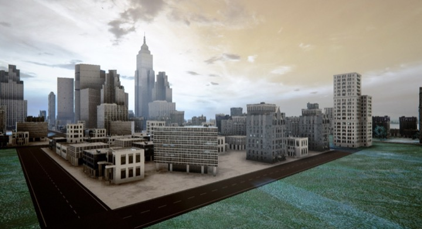
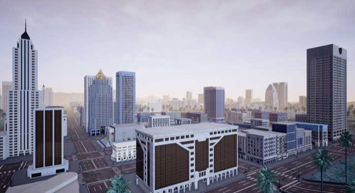
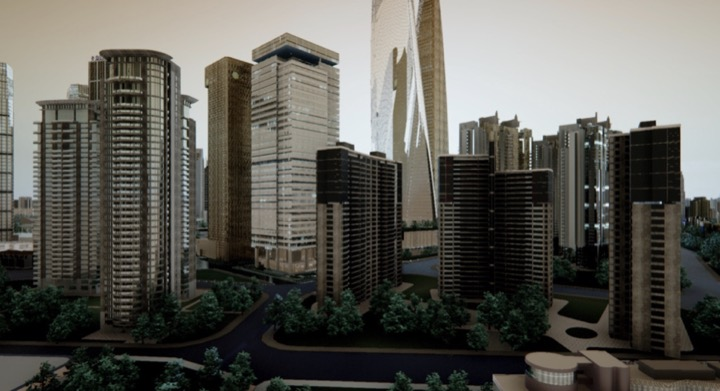
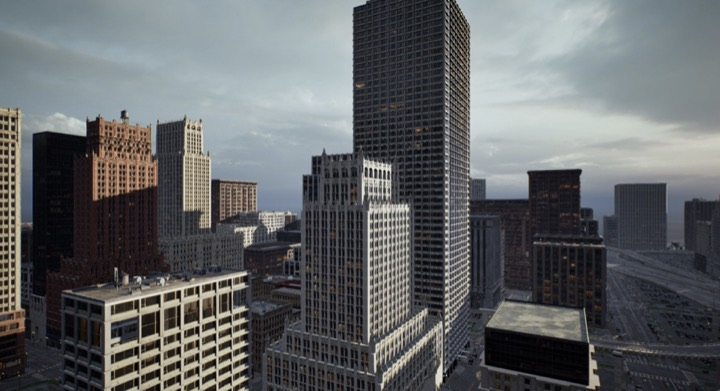
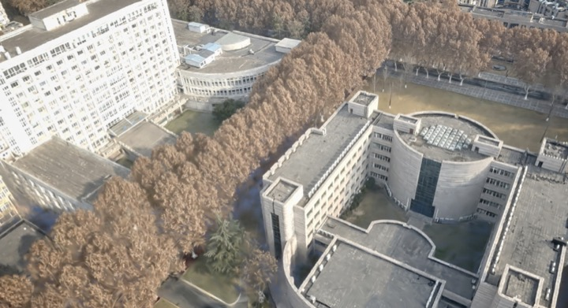
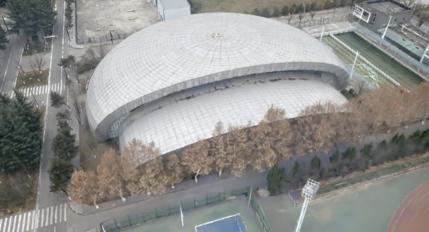
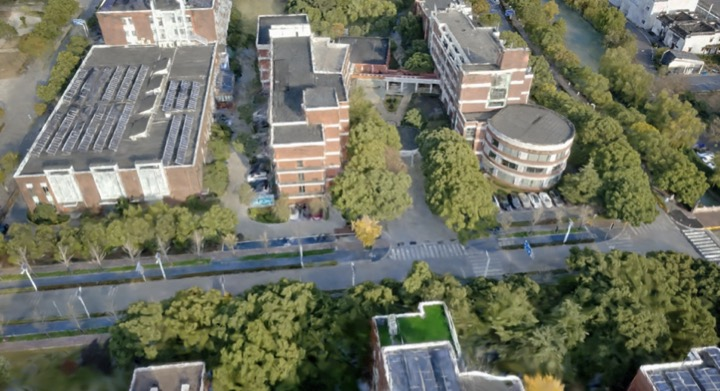
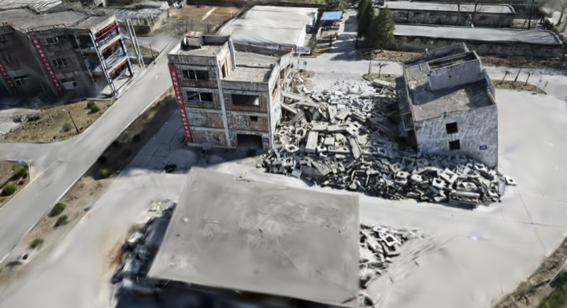
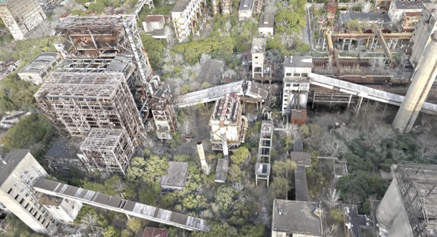

Onboard vision-language-action model for aerial robots
OpenFlyV2: An onboard vision-language-action model for aerial perception and navigation
1Shanghai Artificial Intelligence Laboratory 2Northwestern Polytechnical University 3Beihang University 4Shanghai Jiao Tong University 5Zhejiang University 6University of Science and Technology of China 7Institute of Artificial Intelligence of China Telecom (TeleAI)
Zero-shot real-world flight
Every computation runs on the aircraft: a DJI M30T carrying an NVIDIA Jetson Orin NX. The policy was trained only in simulation and had never seen real flight data.
Head forward toward the U-shaped white building with red brick ends and a curved glass front, where cars are parked nearby, it’s centered at the top of your view.
Then, gently turn right and continue straight ahead to reach the white building adorned with rooftop tanks, satellite dishes, nestled beside lush green trees
Move forward toward the white angular building with a dark flat roof and tapered towers.
Then turn left and continue straight toward the large white curved building with raised rectangular sections beside the river.
- 1Bparameters, one checkpoint
- 10 Hz12-waypoint action chunks
- Orin NXfully onboard inference
- 48%success over 100 real-world trials
Abstract
Human cognition flexibly draws on a shared perceptual foundation to understand environments, attend to referenced entities, reason about spatial relationships, and act. Endowing aerial robots with an analogous functional organization remains challenging, as existing systems are often specialized for individual capabilities, dependent on offboard computation, or unable to sustain closed-loop operation on resource-constrained platforms. We present OpenFlyV2, a unified onboard vision-language-action architecture that uses a shared vision-language representation to support semantic understanding, language-grounded perception, spatial reasoning, and continuous aerial control within a single model. A compact action expert converts the shared multimodal context into short-horizon flight waypoints, while motion-aware temporal memory and action priors reduce the computational cost of closed-loop execution. We construct OpenFlyV2-130K, a simulation-based dataset comprising approximately 70,000 navigation trajectories and 60,000 vision-language instruction–response pairs. OpenFlyV2 generates action chunks, each comprising 12 waypoints, entirely onboard at 10 Hz using an NVIDIA Jetson Orin NX. It transfers zero-shot from simulation to physical quadrotor flight, achieving a 48% navigation success rate across four real-world environments without real-world aerial training data. Extensive results demonstrate that broad vision-language competence and continuous closed-loop flight can coexist within a single model on a resource-constrained aerial platform.
13 simulation environments
Four AirSim maps, two Unreal Engine cities and seven 3D Gaussian Splatting reconstructions of real campuses and post-disaster ruins, covering 254.81 km². The same scenes supply both the navigation and the question-answering data.
Held out Excluded from all training and used to test generalization to unseen environments.
AirSim 4 environments · Unreal Engine maps



Unreal Engine cities 2 environments · engine-authored city scenes

3D Gaussian Splatting 7 environments · reconstructions of real campuses and post-disaster ruins





OpenFlyV2-130K dataset
72,352 language-conditioned navigation trajectories and 60,006 visual question–answer pairs, rendered in the 13 environments. Instructions and answers were generated automatically and then checked by 200 human annotators; only samples that passed verification are included.
Hover or tap a segment, or a name in the legend, to see its share.
Navigation trajectories
72,352 trajectories
- AirSim
- Unreal Engine cities
- 3D Gaussian Splatting
| Name | Count | Share |
|---|---|---|
| AirSim 16 | 6,492 | 8.97% |
| AirSim 18 | 10,038 | 13.87% |
| AirSim 26 | 15,278 | 21.12% |
| AirSim SH | 7,294 | 10.08% |
| UE Big City | 5,785 | 8.00% |
| UE Small City | 4,904 | 6.78% |
| GS ECUST | 3,515 | 4.86% |
| GS NWPU 01 | 4,275 | 5.91% |
| GS NWPU 02 | 4,492 | 6.21% |
| GS SJTU 01 | 4,517 | 6.24% |
| GS SJTU 02 | 4,692 | 6.48% |
| GS Ruins 01 | 589 | 0.81% |
| GS Ruins 02 | 481 | 0.66% |
Visual question answering
60,006 question–answer pairs
| Name | Count | Share |
|---|---|---|
| Color recognition | 4,285 | 7.14% |
| Object description | 7,650 | 12.75% |
| Distance estimation | 9,490 | 15.82% |
| Spatial relationship | 19,975 | 33.29% |
| Visual grounding | 18,606 | 31.01% |
Spatial questions compare two objects by image position, distance from the camera, overlap or containment, and size. Grounding answers are boxes in image coordinates.
The public release on Hugging Face leaves out the two GS Ruins environments for privacy reasons.
Results
One 1B-parameter checkpoint, compared with general-purpose vision-language models on aerial understanding and with vision-language navigation methods in simulation, then flown on a real drone.
Aerial understanding
OpenFlyV2, with a 0.8B vision-language backbone, against three general-purpose models. 300 test examples per task and 1,000 for visual grounding. Hover or tap a bar for its value; axes that don't start at zero are marked with a break, as in the paper.
Color recognition
accuracy, % ↑
- 74Qwen3.5-9B
- 70Gemini 3 Flash
- 85GPT-5.5
- 81OpenFlyV2
| Model | Value |
|---|---|
| Qwen3.5-9B | 74 |
| Gemini 3 Flash | 70 |
| GPT-5.5 | 85 |
| OpenFlyV2 | 81 |
Object description
score out of 10 ↑
- 6.21Qwen3.5-9B
- 6.20Gemini 3 Flash
- 6.36GPT-5.5
- 6.38OpenFlyV2
| Model | Value |
|---|---|
| Qwen3.5-9B | 6.21 |
| Gemini 3 Flash | 6.20 |
| GPT-5.5 | 6.36 |
| OpenFlyV2 | 6.38 |
Visual grounding
Acc@0.5, % ↑
- 59.1Qwen3.5-9B
- 61.6Gemini 3 Flash
- 61.6GPT-5.5
- 67.1OpenFlyV2
| Model | Value |
|---|---|
| Qwen3.5-9B | 59.1 |
| Gemini 3 Flash | 61.6 |
| GPT-5.5 | 61.6 |
| OpenFlyV2 | 67.1 |
Distance estimation
relative error ↓
- 0.41Qwen3.5-9B
- 0.79Gemini 3 Flash
- 0.34GPT-5.5
- 0.27OpenFlyV2
| Model | Value |
|---|---|
| Qwen3.5-9B | 0.41 |
| Gemini 3 Flash | 0.79 |
| GPT-5.5 | 0.34 |
| OpenFlyV2 | 0.27 |
Spatial reasoning
score, % ↑
- 75.33Qwen3.5-9B
- 77.00Gemini 3 Flash
- 83.33GPT-5.5
- 80.67OpenFlyV2
| Model | Value |
|---|---|
| Qwen3.5-9B | 75.33 |
| Gemini 3 Flash | 77.00 |
| GPT-5.5 | 83.33 |
| OpenFlyV2 | 80.67 |
Navigation in simulation
Four open-source baselines trained on the same navigation data, evaluated on 800 episodes in seen and 300 in unseen environments. Success requires an explicit stop within 25 m of the goal.
Real-world flight
- 48%success rate, zero-shot
- 100trials: 50 single- and 50 two-landmark
- 4sites, two of them unseen
- 0real-world training flights